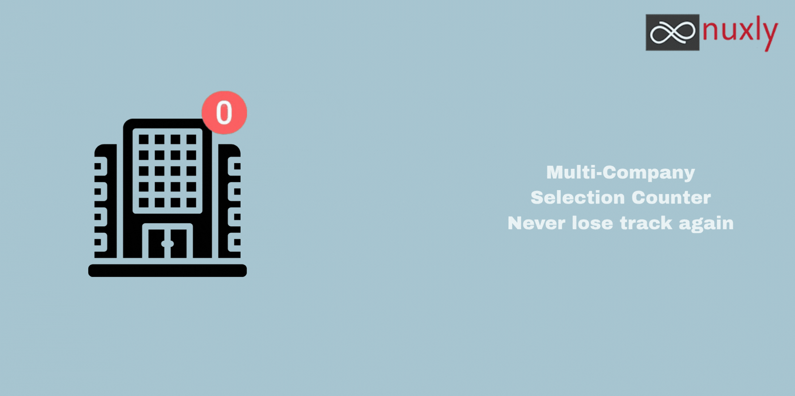
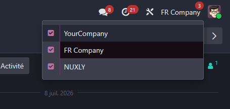

Know at a glance how many companies you have selected
Adds a small badge directly on the company switcher button, showing how many companies are currently selected, and lets you select a whole range of companies with a single shift+click.
web_multi_company_counterTick 2 or more companies in the company switcher: the badge shows their number on the switcher button. Go back to a single company and the badge disappears.
Every company in between (both included) is added to the selection. Companies you are not allowed to select are skipped. A click without Shift keeps Odoo's standard behaviour.
In multi-company setups, it is easy to lose track of how many companies are currently selected. Users sometimes think they are scoped to a single company while another one is still selected, leading to confusion about which records they are actually seeing.
This module adds a simple visual reminder right where users already look (the company switcher itself), and makes selecting many companies at once a matter of two clicks instead of one click per company.

This module is maintained by Nuxly. Visit nuxly.com